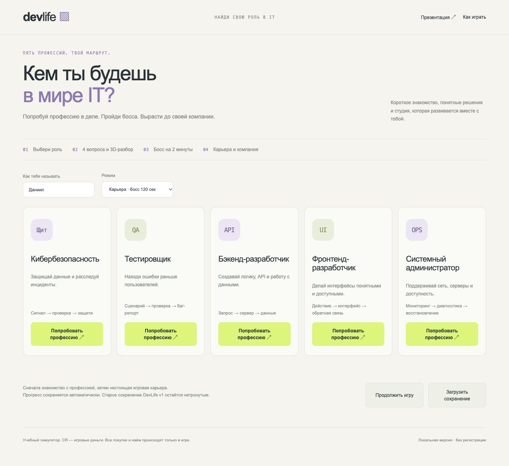
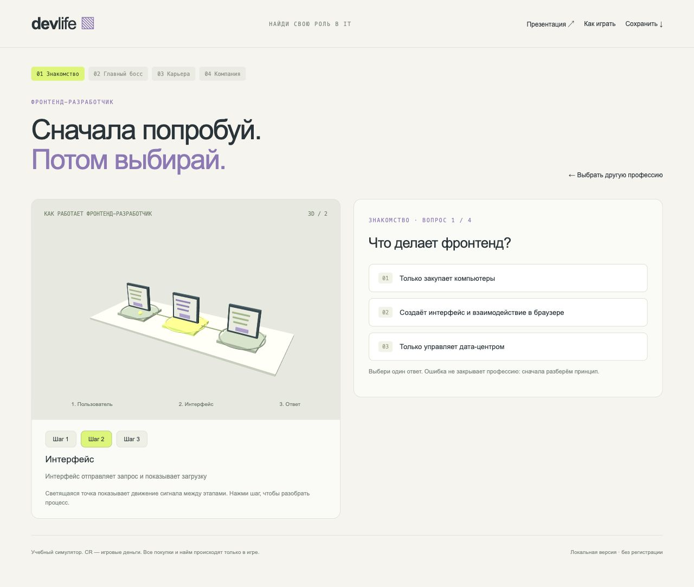
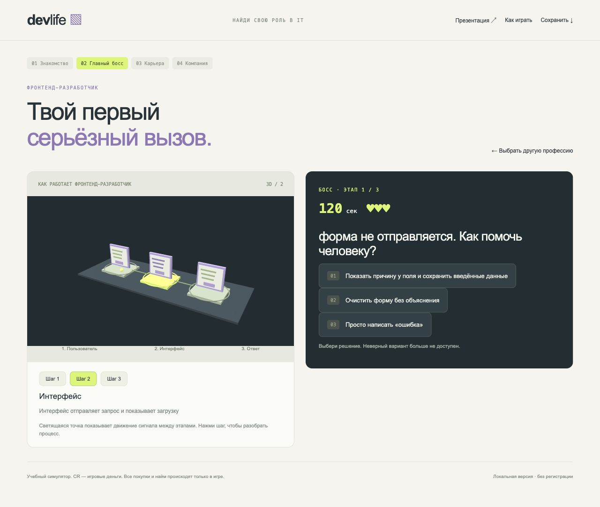
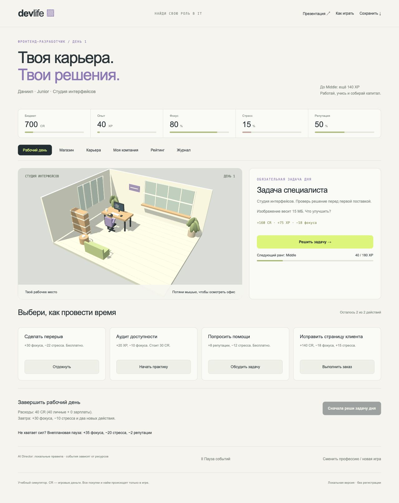
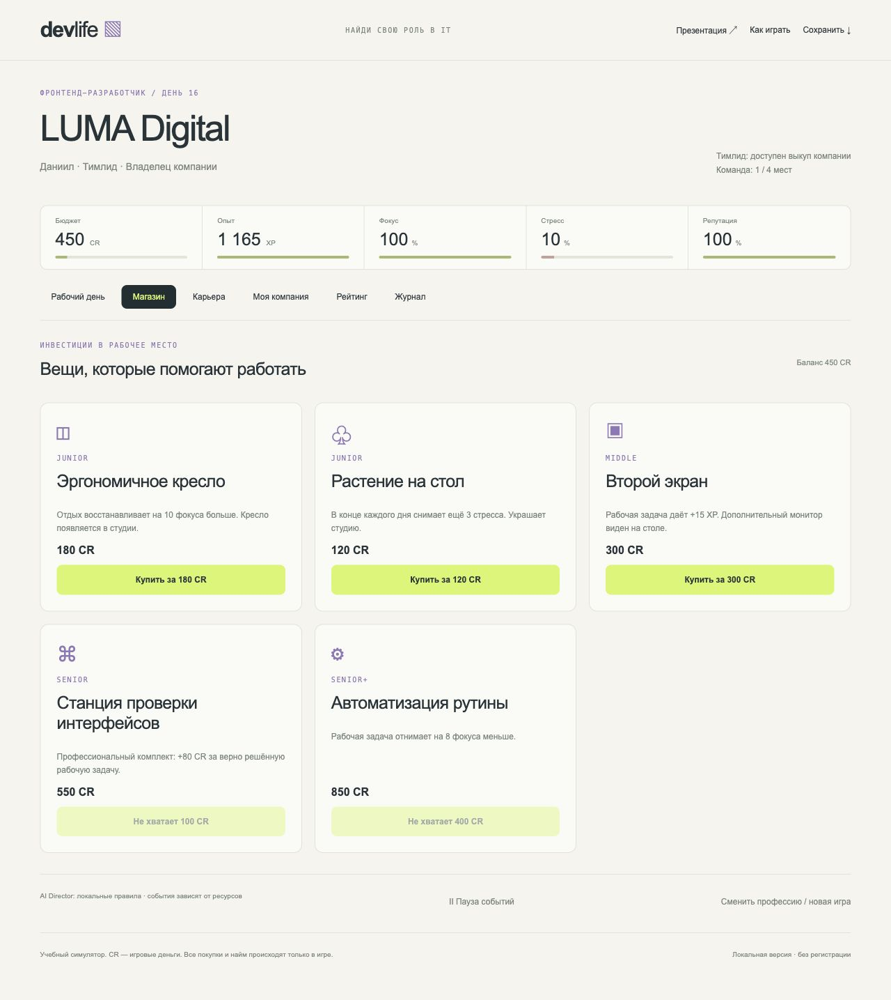
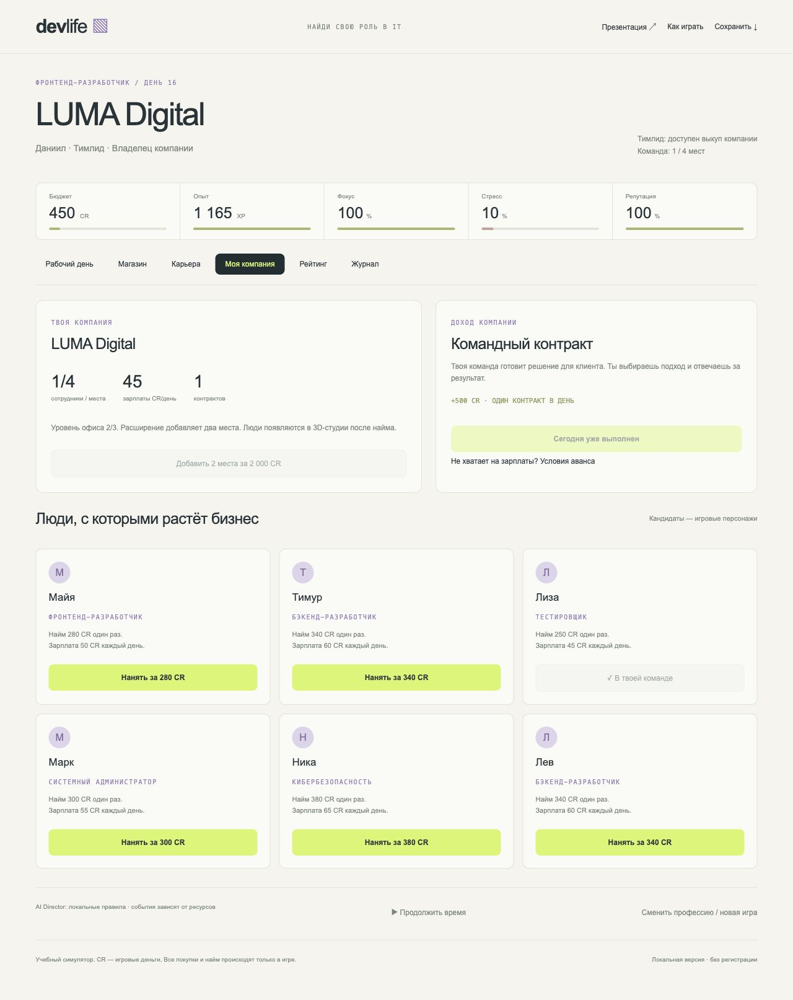
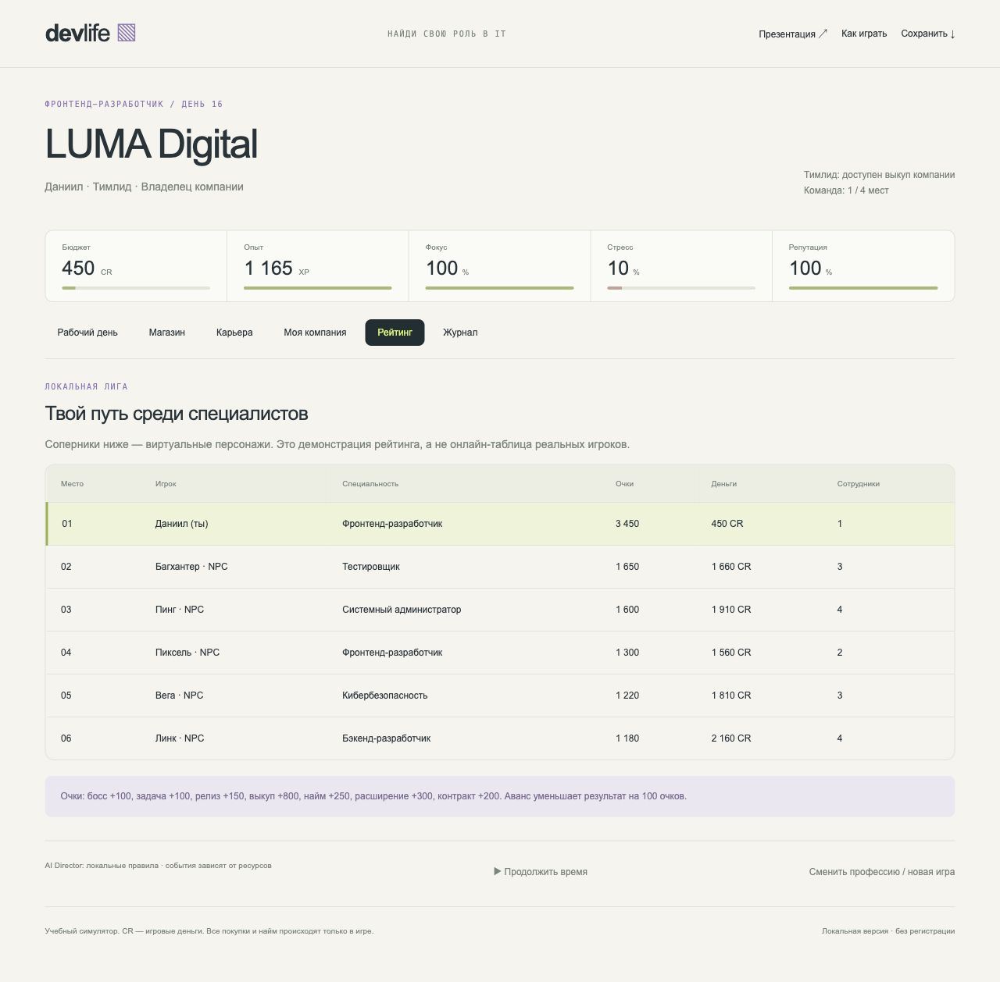

Пять IT-специальностей в браузерной игре
Квизы, 3D, карьера и собственная компания
Игрок принимает решения, получает объяснение и видит последствия.
Проектная гипотеза: такой опыт поможет сравнить IT-роли осмысленнее. Проверка с подростками ещё впереди.
Кибербезопасность, QA, backend, frontend и системное администрирование.
У каждой роли свои вопросы, 3D-пояснения, действия и профессиональное оборудование.

Четыре вопроса и три шага 3D-процесса
Главный босс: три решения за две минуты
Работа, улучшения и пять карьерных рангов
Выкуп, команда, контракты и расширение
Схема разбита на понятные этапы. После ответа игрок получает причину, а не только отметку «верно».
Ошибка во вводном квизе не закрывает доступ к профессии.

Аварийная ситуация по выбранной профессии.
Важен осмысленный выбор под ограничением времени. После неудачи можно повторить. Победа открывает карьеру.

Рабочая задача приносит опыт и деньги. Дополнительные действия помогают учиться, восстанавливать силы и работать с командой.
Повышение открывает новые покупки и возможности.

Кресло усиливает отдых. Второй экран добавляет опыт. Профессиональный комплект повышает доход.
Цена, эффект и нужный ранг видны до покупки.

Тимлид выкупает бизнес за 3 800 игровых CR. После этого доступны найм и расширение офиса.
Контракты дают доход, сотрудники требуют зарплаты. Решения связаны общей экономикой.

Рейтинг показывает разные результаты карьеры.
В текущей версии это локальная лига с явно обозначенными NPC. Реальные игроки и доверенный сервер входят в дальнейшее развитие.

Понятные формы и кнопки.
Адаптивная вёрстка.
Запуск без установки и регистрации.
ES-модули разделяют код без обязательного сборщика.
Интерактивная студия и учебные схемы прямо в браузере.
Библиотека лежит внутри проекта. Игровые ресурсы не требуют CDN.
content.js
Профессии, вопросы, объяснения и названия оборудования.
engine.js
Этапы, экономика, карьера и ограничения действий.
app.js
Экраны, таймеры, сохранения и обратная связь.
scene.js
Учебные схемы, студия, предметы и сотрудники.
Интерфейс объясняет ограничение.
Игровой движок проверяет его при действии.
Так один и тот же закон работает при клике и прямом вызове функции в тесте.
function owner(s) {
requireStage(s);
if (!s.company)
throw Error('Сначала выкупи компанию');
}
export function hire(s, id) {
owner(s);
// Затем: места, деньги и кандидат
}answerTask проверяет taskDone.
Верное решение фиксирует завершение и начисляет награду в одном переходе. Повторная отправка не даёт второй выплаты.
endDay сначала проверяет бюджет и списывает расходы.
Только затем меняется день. Если средств мало, игрок видит причину и доступный способ продолжить.
Пять маршрутов пройдены логикой от старта до компании с шестью сотрудниками.
Проверены таймер босса, повторные награды, покупки, владение, зарплаты и сохранения. Ключевые экраны и действия проверены в браузере.
Пять ролей и профессиональные объяснения.
Босс и продолжительная карьера.
Компания с доходами и зарплатами.
Сохранение и перенос JSON.
Все игровые суммы вымышлены.
Плейтест с подростками.
Сравнение понимания ролей до и после.
Более разнообразные профессиональные задания.
Затем: серверный рейтинг и защита результата от подмены.
Геймдизайн и образовательный контент.
Программирование и 3D.
Интерфейс и тестирование.
Имена и распределение ролей уточняются. В разработке использован ИИ-помощник.
Game Dev Tycoon
Развитие студии и решения в производстве.
Human Resource Machine
Логические задачи как знакомство с программированием.
Графика и код этих игр не копировались.
DevLife соединяет знакомство с IT и долгую игровую цель.
Локальное демо: http://localhost:8785
Исходники и презентация доступны в папке проекта.